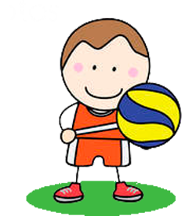

На главную
Волейбол

Волейбол - спортивная игра где отбивают мяч руками через сетку от одной команды к другой. Официально датой рождения игры считается 1895 год. Двадцатилетний американский преподаватель физкультуры из Гелиокского колледжа (штат Массачусетс) Уильям Дж. Морган объявил об изобретении игры волейбол, а также разработал первые правила, обнародованные в 1897 г., которые состояли из 10-ти параграфов.